跟着头顶橘子的卡皮巴拉，先弄懂 AI 是怎么一步一步学会的，再看它怎样像一把钥匙，带我们走进宇宙、大海和人体。
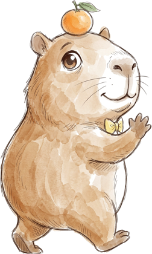
每集不到 2 分钟。第一集没有旁白，只有手写字；第二集有英文旁白和中英字幕。
视频下方的章节按钮可以直接跳到对应画面，适合讲解时暂停提问。
每集后面有 3 道小题，最后有一个“画你自己的门”的课堂活动。
一支铅笔画出了卡皮。卡皮想知道“AI 是什么”，于是踩着数据、算法、神经网络三摞书往上爬，训练失败摔了下来，又顺着越来越低的 loss 曲线滑向成功。
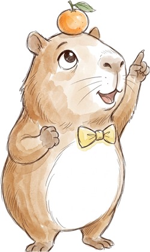
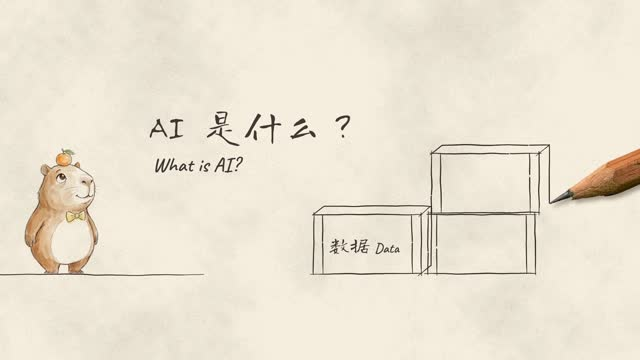
AI 学习用的“例子”。看过的例子越多、越好，学到的规律就越可靠。
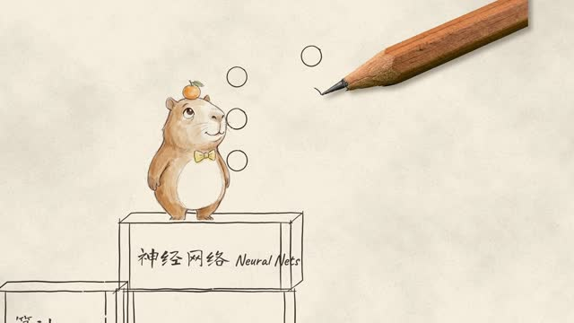
算法是“怎么学”的方法；神经网络是一层层连接的节点，学习时不断调整连接的强弱。
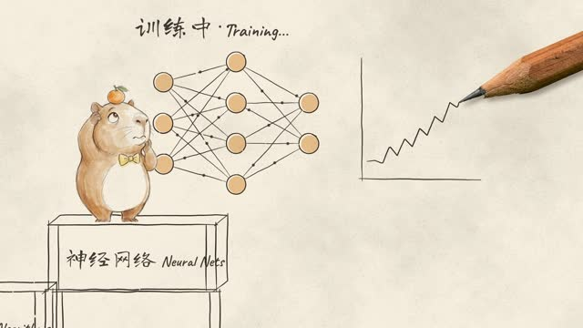
loss 用来衡量 AI 的答案离正确答案有多远。曲线往上走，说明这次训练没学好。
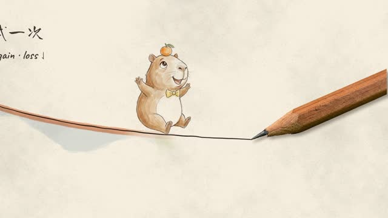
失败很正常。调整、再试，一轮一轮（epochs）把 loss 降下来，AI 才慢慢学会。
第二天，机器人朋友送给卡皮一把金钥匙。铅笔画出一扇扇门：水彩的宇宙、蜡笔的大海、蓝图里的心脏。最后，铅笔把自己交给了卡皮。
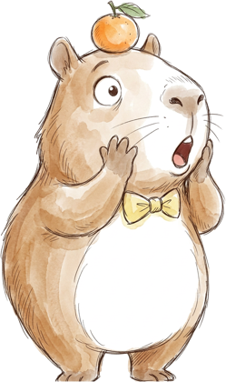
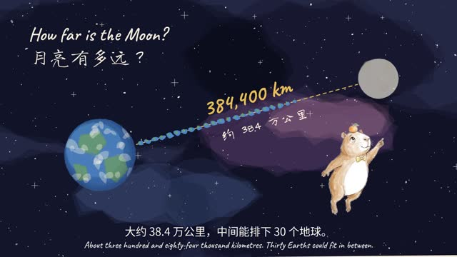
月球到地球的平均距离约 38.4 万公里，中间大约能排下 30 个地球。
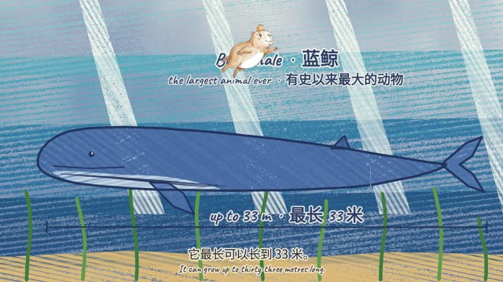
蓝鲸是地球上有史以来最大的动物，最长可达约 110 英尺（约 33 米）。
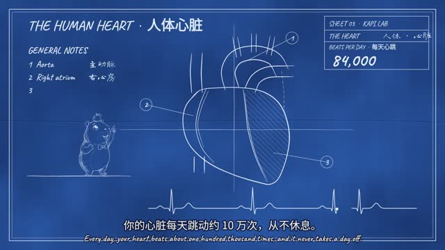
心脏每天大约跳动 10 万次，一刻不停地把血液送往全身。
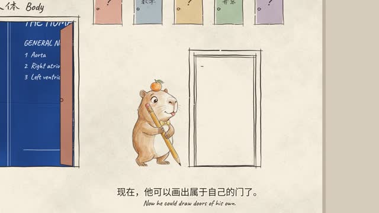
第一集里，卡皮是被铅笔画出来的；第二集结尾，卡皮自己拿起笔画门。会提问、会动手的人，才能打开属于自己的门。
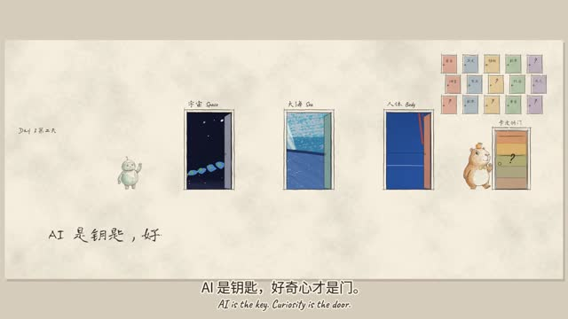
钥匙再好，也得先有想打开的门。先有好问题，AI 才派得上用场。
| 第一集 · 学会 | 第二集 · 打开新世界 | |
|---|---|---|
| 卡皮 | 被铅笔画出来 | 接过铅笔，自己画门 |
| 主题 | AI 是怎么学会的 | 用 AI 去学更多知识 |
| 画风 | 全片钢笔淡彩 | 纸页钢笔淡彩 + 水彩宇宙、蜡笔大海、蓝图人体 |
| 声音 | 无旁白，手写中英字 | 英文旁白 + 中英字幕 |
| 一句话 | AI 不是魔法，是一步一步学会的 | AI 是钥匙，好奇心才是门 |
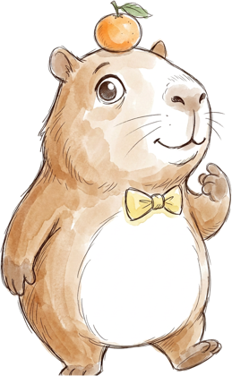
写下一个你真的好奇的问题，比如“为什么天是蓝的？”“鲸鱼怎么睡觉？”
在纸上画一扇门，把问题写在门上，门后画出你猜的答案。
问一问 AI，再找一个可靠来源核对。说说：AI 说对了吗？哪里需要改？
两集测验得分：0 / 6